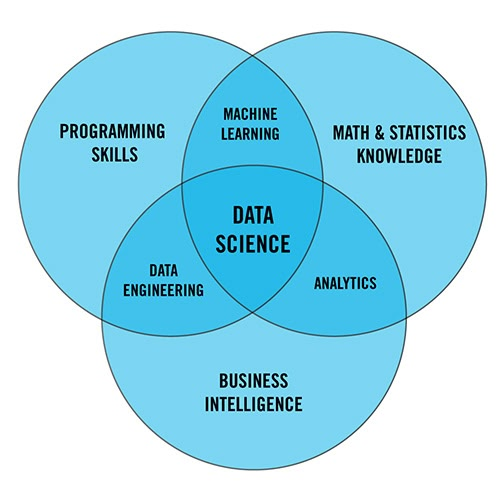

CS + Data Science Done Right
Why most students waste this easy double major combination and how to actually build valuable skills instead of just collecting credentials. 2025-08-15
Introduction
I am what feels like moments away from finishing my double major in Computer Science and Data Science, and I’ll be receiving my piece of paper from UW-Madison soon (knock on wood). While I’m double majoring, I consider myself a Computer Scientist first, which is why it caught my attention when, during my time hanging around my Comp Sci friends, I heard over and over, “data science is a fake major!”—Now, granted, at my university I can understand the sentiment. At UW-Madison, if you start as a CS major, you only need to tack on five additional classes to get Data Science. And there’s definitely a minimum resistance path where students can “skirt through” the more information-dense and challenging courses and learn essentially nothing. I’m writing this today to share what I did and how I feel I will leave UW not clueless about data science, but relatively well-versed in the tools of the Data Scientist.
Disclaimer
I’m going to share with you my path. While I’m convinced it’s near optimal with regard to a balance of content and time efficiency, it is not the only path that will leave you feeling fulfilled. As always: use a combination of madgrades.com (for GPA) and ratemyprofessor (for professor reviews) to guarantee you don’t shoot yourself in the foot. As a general rule, I have never taken a professor with a rating ≤ 2.7.
Courses
The Boilerplate
The boilerplate in the Data Science major is the set of classes I had to go through no matter what: the R programming and tidyverse tutorial (STAT 240), AP Stats 2.0 (STAT 340), and the yucky gobbledygook of intro to “data science programming,” a.k.a. Python (CS 220 & CS 320). I endured that slog, and then I was out! Only interesting classes remain.
Good Courses
Since I was a computer science major first, I had already set my sights on a few interesting classes with ties to data science. I’d already tackled CS 577, which covered greedy algorithms, divide and conquer, dynamic programming, and computational complexity. This course provided the theoretical foundation that makes understanding distributed systems possible.
First and foremost, I took big data systems with Tyler Caraza-Harter (CS 544), where I learned how massive tech companies actually handle billions of users’ data using tools like Spark and Hadoop, which companies like Meta use to process their 4 petabytes of daily data. That same semester, I took databases with AnHai Doan (CS 564), which taught me the theory of how databases work under the hood. We only spent a week on SQL, and AnHai joked that if I couldn’t understand it by that point, I should take a community college course! Valid and refreshing. The real focus was on things like how databases physically store data on disk, buffer management, and B+ tree indexing.
I also took STAT 436 to learn precisely when to use precisely what data visualization to represent data.
Great Courses
One of my favorite classes period was CS 774 with AnHai. I liked his databases class in the fall, so I sought out his grad class in the spring. This was incredibly worth it because it broke down how things actually work in the real world. It dissipated a lot of the cloudy naïveté I had as an undergraduate about data science being clean datasets and straightforward analysis. In the real world, data is messy, fragmented, and low-quality. Most of your time is spent on data wrangling—acquiring, cleaning, matching, and integrating data sources. It takes a lot of work to even begin to think about insights. AnHai’s blunt, practical approach (“Nobody wants to give you data… take them out for Indian food and fill them with beer” and his favorite reminder that “Nothing is free in life!”) honestly stripped away a lot of my academic idealism and prepared me for the actual challenges I’d face as a data scientist.
This upcoming semester, I will take CS 532. It covers linear algebraic foundations of machine learning with real-world applications from classification and clustering to denoising and data analysis. Topics include linear equations, regression, regularization, singular value decomposition, support vector machines, kernel methods, clustering, and neural networks. It’s the talk of the town and dear god has it been hard to get into. But I’ve finally got it.
An Internship Helps
Like it or not, skills are forged in fire and a data science internship is a perfect opportunity to test your mettle. It’s a rough market, but if you look high and low, and commit yourself, I have no doubt you will find a window of opportunity.
An internship is great because it situates you (the data scientist/software engineer) within the broader structure of a business. I was quickly inundated with talk of KPIs and deliverables. I learned to frame my accomplishments in a way my audience would understand—either at the strategic or tactical level11 Strategic level focuses on high-level business goals and long-term impact (e.g., “This model increased customer retention by 15%”). Tactical level focuses on specific technical implementations and immediate deliverables (e.g., “Built a feature engineering pipeline that reduced processing time by 40%”)..
I learned how to interact with other human beings, work together, hash out issues and team up. I learned how gritty real-world data is, how messy a database can be, and what silly company policies make your idealism fade quickly away and get replaced with the vigor of “I’m working with what I’ve got and that’s okay.”
It’s frustrating, it’s wonderful, and you learn a ton.
Comparing Math, Stats, and DS for CS Majors
They say a picture is worth a thousand words:

As a hybrid major, data science gives you a taste of everything but mastery of none. The diagram above shows the reality of what this field actually is—not a standalone discipline, but the overlap between three distinct areas of expertise.
Pairing CS with a more “pure” major like Math or Statistics avoids some of the dregs you encounter in hybrid programs. You skip the watered-down intro courses designed for people who’ve never coded before. You avoid the awkward positioning where you’re getting a diluted version of mathematical concepts filtered through a “data science” lens.
Instead, you develop deep mathematical or statistical maturity that carries you far beyond any specific tool or framework. Real analysis teaches you to think rigorously about limits and continuity—and yes, working through Rudin (our own UW-Madison Walter Rudin’s Principles of Mathematical Analysis) will make you a fundamentally better thinker. Advanced statistical theory gives you the foundation to understand why methods work, not just how to apply them.
Nevertheless, there is hardly a more efficient pathway than CS + Data Science for getting exposure to the entire ecosystem. You touch machine learning, databases, visualization, big data systems, and business applications all within a structured curriculum. For someone who wants to get into the field quickly and start contributing, it’s hard to beat.
That said, if I had to do it all over again, I think I’d choose CS + Math or CS + Stats. The mathematical maturity you develop creates a foundation that transcends any particular technology.
Ultimately, the choice depends on your goals: breadth and efficiency (CS + DS) or depth and long-term foundation (CS + Math/Stats). No matter which option you choose, the key is intentionally taking the right classes and collecting the right skills, rather than opting for the easy road, collecting credentials, and walking out the door.